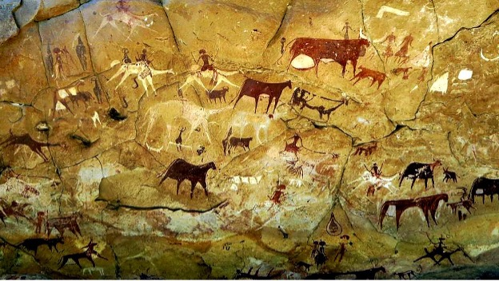
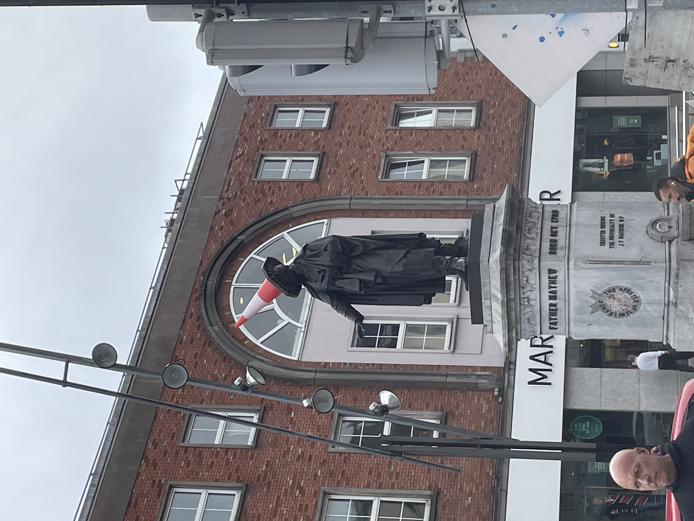
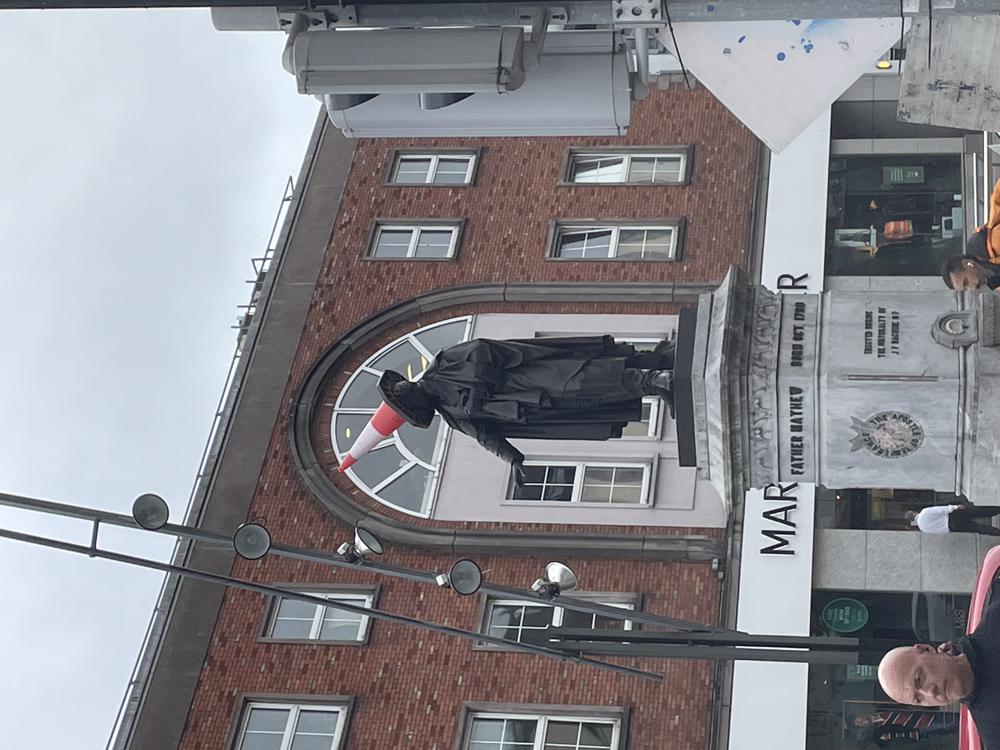

I may only look 23 years old but, I am actually very old. So old in fact that my birth certificate was written on a rock.
Before starting my life under my latest assumed name, Josh Foley, I have lived 100 lives. Some of them were widely known as Napoleon, Bill (some called me William) Shakespeare, Aristotle, Alexander the Great, Plato and Augustus. What can I say, I like to switch up names occasionally.

I will admit most of the images depicting me throughout my career were merely the rendition of artist who'd never seen me, thus the visual discrepancies. There was one rendition that was actually accurate of me in my youth.
It has since been titled simply "David". It was sculpted by my dear friend Michelangelo. You may know him by his current name Kelly. Thanks bud!
Most recently I have settled in Rio Rancho as I heard it was a great place to retire due to the great weather.
I have played sports since moving to Rio Rancho. While obtaining my bachelors degree at The University of New Mexico I also earned a spot on their football team as a Running Back.
Even though I've been around the world time and time again I still like to act like a tourist.
For instance, most recently I went on a trip to Ireland, here are some pictures!

 
